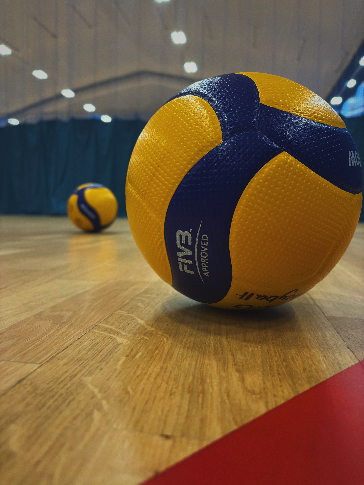

Площадка и инвентарь
Переход по разделам: Раздел 1 | Раздел 2
Раздел 1: Волейбольная площадка
Волейбольная площадка представляет собой прямоугольник размером 18×9 метров, разделённый пополам сеткой. Каждая половина имеет размеры 9×9 метров. Линии разметки наносятся белой краской и имеют ширину 5 сантиметров. Все линии входят в размер площадки, то есть мяч, коснувшийся линии, считается «в игре».
Вокруг площадки должна быть свободная зона шириной не менее 3 метров со всех сторон. Для официальных соревнований FIVB рекомендует свободную зону шириной 5 метров по боковым линиям и 6,5 метров по лицевым. Потолок над площадкой должен находиться на высоте не менее 12,5 метров от пола.
| Параметр | Значение | Примечание |
|---|---|---|
| Общая длина | 18 метров | Включая все линии разметки |
| Общая ширина | 9 метров | Включая все линии разметки |
| Размер одной половины | 9×9 метров | Разделены сеткой |
| Ширина линий разметки | 5 сантиметров | Белый цвет, входят в размер площадки |
| Свободная зона (минимум) | 3 метра | Со всех сторон площадки |
| Высота потолка (минимум) | 12,5 метров | Для официальных соревнований |
| Зона замены | За лицевой линией | Ограничена двумя линиями длиной 15 см |
Покрытие площадки должно быть ровным и однородным. Для официальных соревнований допускается только деревянное или синтетическое покрытие. Любое покрытие должно быть утверждено FIVB. На открытых площадках допускается уклон 5 миллиметров на метр для стока воды.
Раздел 2: Волейбольный мяч
Волейбольный мяч имеет сферическую форму и изготавливается из гибкого материала (кожи или синтетического аналога) с камерой внутри. Окружность мяча составляет 65–67 сантиметров, вес — 260–280 граммов. Давление внутри мяча должно быть в пределах 0,30–0,325 кг/см² (294,3–318,82 мбар или гПа).
Для официальных соревнований FIVB мячи должны быть однородного светлого цвета или комбинации цветов. Материалы и конструкция мячей утверждаются FIVB. На международных соревнованиях используется не менее трёх комплектов мячей, а рядом с площадкой находятся шесть человек, готовых быстро подать новые мячи.
| Параметр | Значение | Изображение | Дополнительно |
|---|---|---|---|
| Окружность | 65–67 см |
 |
Измеряется по экватору мяча |
| Вес | 260–280 г | Волейбольный мяч — статья в Википедии | |
| Давление | 0,30–0,325 кг/см² | FIVB — утверждённые стандарты | |
| Материал | Кожа или синтетика | Однородный светлый цвет или комбинация | |
| Количество панелей | 18 панелей | Стандартная конструкция для официальных мячей | |
Мячи для пляжного волейбола имеют немного другие характеристики: они крупнее (окружность 66–68 см), легче (260–280 г) и имеют более мягкое давление (0,175–0,225 кг/см²), чтобы лучше летать в условиях ветра. Цвет мячей для пляжного волейбола обычно яркий — жёлтый, оранжевый или комбинация цветов — для лучшей видимости на фоне песка и неба.
Требования к инвентарю для официальных соревнований:
- Все мячи должны быть одинаковыми по модели, цвету и давлению
- Минимум три комплекта мячей должны быть готовы к использованию
- Рядом с площадкой находятся шесть человек для быстрой подачи мячей
- Сетка должна быть проверена на высоту и натяжение перед началом матча
- Антенны должны быть установлены строго по краям сетки
Правильный выбор и подготовка инвентаря — залог качественной игры. Перед каждым матчем судьи проверяют высоту сетки, давление мячей и состояние покрытия площадки. Любое несоответствие стандартам может стать причиной переноса или отмены матча.